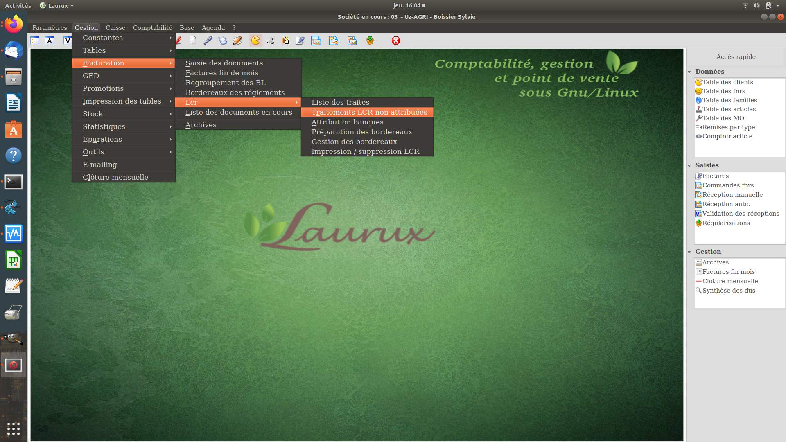

~ Laurux.LCR ~

~ Laurux.LCR ~ |
|
|
|
Généralités
Laurux.LCR est un programme de gestion
des LCR (Lettre de change relevé) permettant le traitement complet de
ce mode de règlement partant de la récupération des traites générées
par le programme de facturation (Laurux) à l'envoi par mail directement
à la
banque d'un fichier texte répondant aux normes du Comité Français d'organisation et
de
Normalisation Bancaires.
Laurux.LCR qui tourne sous Linux n'est pas un programme autonome puisqu'il fonctionne avec la base de données du programme de gestion Laurux .
Laurux.LCR travaille avec les sociétés créées par le programme de gestion et donc, il est conséquemment multi-sociétés.
Laurux.LCR permet la création manuelle des LCR ainsi que l'import des LCR et des traites générées par le programme de facturation .
On peut très simplement
supprimer, modifier, écarter ou réintégrer des LCR selon ses besoins.
Laurux.LCR permet
l'attribution des
banques soit pour une LCR sélectionnée ou soit pour un ensemble de LCR
non attribuées.
Voici, ci-dessous, un aperçu
du menu principal du programme

----------------------------------------------------------------------------------------------------------------------